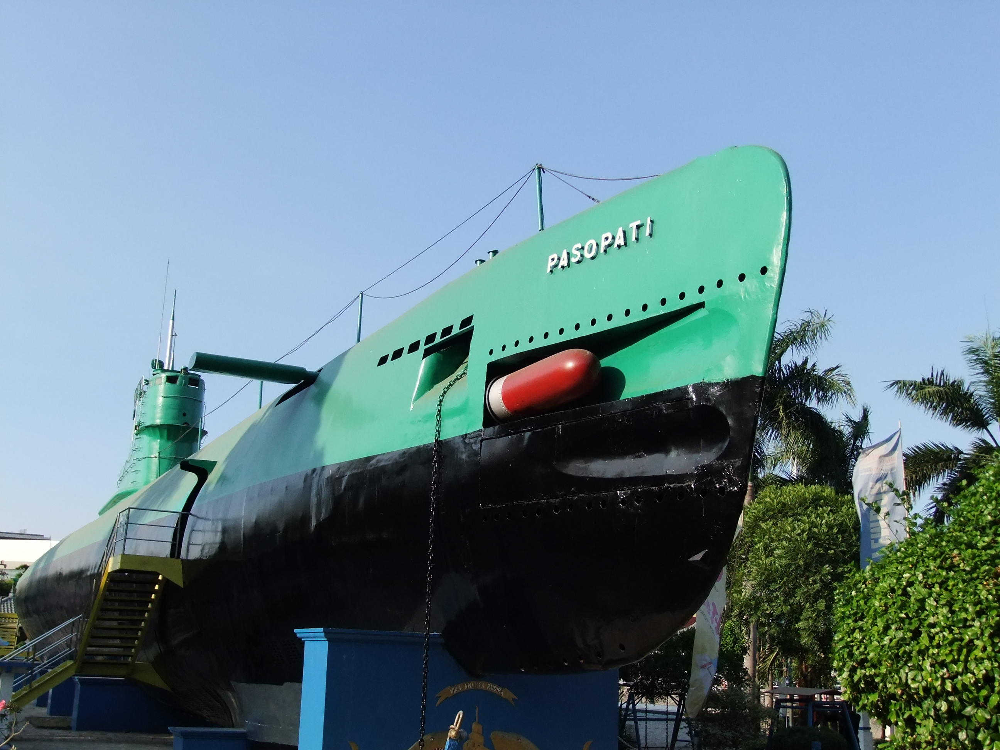

Tourist Spots in Surabaya
Monumen Kapal Selam
A submarine monument that serves as a museum showcasing Indonesia's naval history.
🗺️ MapsTugu Pahlawan
A 41-meter tall heroes monument commemorating the battle of Surabaya in 1945.
🗺️ MapsHouse of Sampoerna
A colonial cigarette museum showcasing the history of tobacco industry in Indonesia.
🗺️ MapsKebun Binatang Surabaya

The oldest zoo in Southeast Asia, home to various animal species.
🗺️ Maps